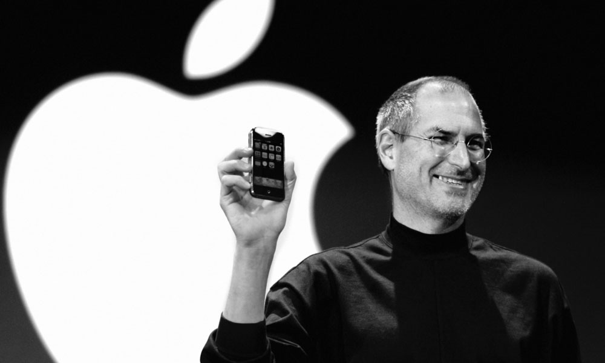

회를 구성하는 것이다. 당선인은 인수위원회를 통해 차기 정부 5년의 밑그림을 그려 국정 목표를 구체화하게 된다. 앞서 문재인 정부는 박근혜 전 대통령의 탄핵으로 대통령 선거 다음 날 바로 국정을 물려받아야 했기 때문에 인수위를 꾸리지 못했다. 이에 따라 인수위는 이번 대선을 통해 10년 만에 꾸려지게 된다.
스티브잡스급 기획력과 일론머스크의 어그로
김가온이랑 과제연구를 시작하려고 하고 보스 스피커를 블루투스 스피커로 개조하려 하고 스파크 장치를 용대가리에 달려고 했다
한시간 정도의 HTML 공부를 했다 예전에 한번 들은 내용이라 은근 쉬웠는데 이걸 계속 기억하려면 계속 복습해야할듯하다
매일 한시간씩 들으면 HTML은 6일안에 끝날듯 하다
